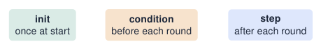
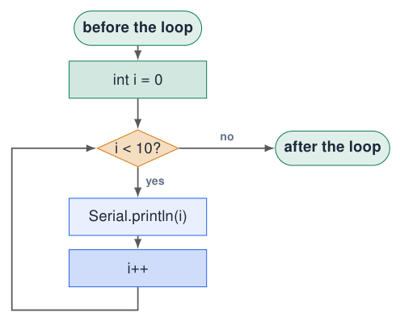
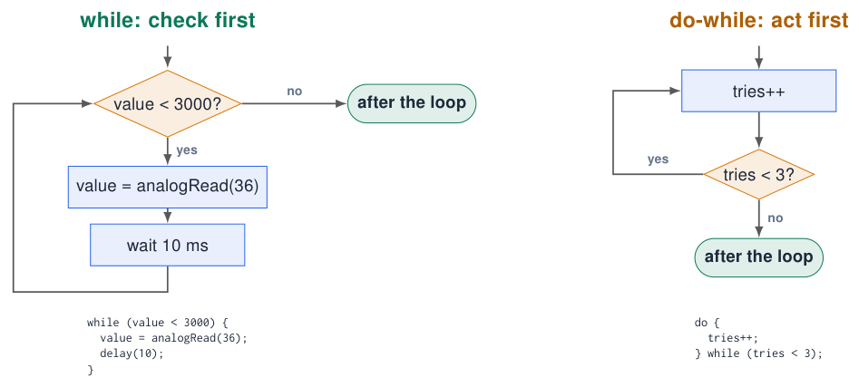
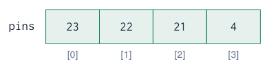

Loops and Arrays¶
The for loop: repeat a known number of times¶
(int i = 0; i \< 10; i++) { … }

for (int i = 0; i < 10; i++) {
Serial.println(i); // 0 1 2 ... 9
}
-
int i = 0: create the counter. -
i < 10? If false: leave the loop. -
Run the body.
-
i++: add 1, back to step 2.
Counting
Start at 0 and use <: the body runs exactly 10 times (0 … 9). This matches array indices.
Sources: Embedded Programming, lectures 1–6
Flowchart: the for loop¶
Try simulation: Arduino to flowchart

(int i = 0; i \< 10; i++) {
Serial.println(i);
}
-
init runs once.
-
condition is checked before every round.
-
The body runs, then the step; back to 2.
-
Condition false \(\Rightarrow\) continue after the loop.
Zero rounds
If the condition is false at the start, the body never runs.
for loops in practice¶
// blink 5 times
for (int i = 0; i < 5; i++) {
digitalWrite(23, HIGH); delay(100);
digitalWrite(23, LOW); delay(100);
}
// count down 10, 9, ... 1
for (int i = 10; i > 0; i--) {
Serial.println(i);
}
// even numbers 0, 2, ... 20
for (int i = 0; i <= 20; i += 2) {
Serial.println(i);
}
// nested loops: multiplication table
for (int row = 1; row <= 5; row++) {
for (int col = 1; col <= 5; col++) {
Serial.printf("%4d", row * col);
}
Serial.println();
}
-
The step can be anything:
i--,i += 2,i *= 2. -
Nested loops: the inner loop runs completely for every round of the outer loop (5 \(\times\) 5 = 25 prints).
-
%4dprints a number in a 4-character column.
The while loop: repeat until something happens¶
// keep reading until the pot is high
int value = analogRead(36);
while (value < 3000) {
value = analogRead(36);
delay(10);
}
Serial.println("Threshold reached");
// wait until KEY1 is pressed
while (digitalRead(34) == LOW) {
// do nothing: just wait
}
// do-while: body runs at least once
int tries = 0;
do {
tries++;
} while (tries < 3);
-
for: you know how many times. -
while: you repeat until a condition changes. -
The condition must be able to change inside the loop, otherwise it never ends.
-
breakleaves a loop early;continueskips to the next round.
Loops can block your program
While the ESP32 waits in a while, nothing else happens: no other button, no LED, no Wi-Fi. Prefer if + millis() (chapter Time and Interrupts).
Sources: Examples from lecture 2 Embedded Programming, lectures 1–6
Flowcharts: while vs do-while¶
Try simulation: Arduino to flowchart

while: the diamond comes first: 0 or more rounds. do-while: the body comes first: at least one round.
Arrays: many values under one name¶
// without arrays: 5 names
int value1, value2, value3, value4, value5;
// with an array: 1 name, 5 elements
int values[5];
// declare and fill at once
int pins[] = {23, 22, 21, 4}; // size 4
values[0] = 120; // first element
values[4] = 980; // last element
int first = pins[0]; // 23

-
An array stores several values of the same type next to each other in memory.
-
The index in
[ ]selects an element and starts at 0. -
An array of size N has indices 0 … N\(-\)1.
-
The size is fixed when you declare it.
Out of bounds
values[5] on a 5-element array is not checked: it reads or overwrites other memory \(\Rightarrow\) strange bugs or a crash.
Arrays + loops: a perfect team¶
const int N = 10;
int samples[N];
void setup() {
Serial.begin(115200);
for (int i = 0; i < N; i++) { // fill
samples[i] = analogRead(36);
delay(20);
}
long sum = 0; // average
int minV = samples[0];
int maxV = samples[0];
for (int i = 0; i < N; i++) {
sum += samples[i];
if (samples[i] < minV) minV = samples[i];
if (samples[i] > maxV) maxV = samples[i];
}
Serial.printf("avg=%ld min=%d max=%d\n",
sum / N, minV, maxV);
}
void loop() {}
-
The loop counter
iis used as the index. -
One loop to fill, one loop to process.
-
sumis along: 10 \(\times\) 4095 fits in aninton the ESP32, but not on an Uno. -
Min/max: start with the first element, then compare every other one.
Why average?
ADC readings are noisy. The average of 10 samples is much more stable than one sample.
Sources: Adapted from lecture 2 Embedded Programming, lectures 1–6
Example: LED chaser with an array of pins¶
const int LEDS[] = {23, 22, 21, 4};
const int N = sizeof(LEDS) / sizeof(LEDS[0]); // 4
void setup() {
for (int i = 0; i < N; i++) {
pinMode(LEDS[i], OUTPUT);
}
}
void loop() {
for (int i = 0; i < N; i++) { // forward
digitalWrite(LEDS[i], HIGH);
delay(120);
digitalWrite(LEDS[i], LOW);
}
for (int i = N - 2; i > 0; i--) { // back
digitalWrite(LEDS[i], HIGH);
delay(120);
digitalWrite(LEDS[i], LOW);
}
}
-
Compare with the 4-LED example in Digital I/O: same behaviour, much less code.
-
Adding a fifth LED = adding one number to the array.
-
sizeof(array) / sizeof(element)computes the number of elements automatically.
Data-driven code
The data (pin list) is separate from the logic (the loops). This idea comes back in every larger program.
Example: a moving-average filter¶
const int N = 16;
int buffer[N]; // last N readings
int pos = 0; // where the next one goes
long sum = 0;
void setup() { Serial.begin(115200); }
void loop() {
int raw = analogRead(36);
sum -= buffer[pos]; // remove oldest
buffer[pos] = raw; // store newest
sum += raw;
pos = (pos + 1) % N; // wrap around
int filtered = sum / N;
Serial.printf("raw:%d,filtered:%d\n", raw, filtered);
delay(20);
}
-
A circular buffer:
posruns 0 … 15, 0 … 15 thanks to% N. -
Keep a running
sum: subtract the oldest, add the newest. No inner loop needed. -
Open the Serial Plotter: the filtered line is smooth but reacts slower.
Trade-off
Larger N = smoother but slower. Choose N for your signal.
SOS refactoring: from literal timings to named data¶
Step 1: a list of on/off durations
// Alternating LED-on and LED-off times, ms.
const int durations[] = {
500, 500, 500, 500, 500, 500,
1500, 500, 1500, 500, 1500, 500,
500, 500, 500, 500, 500, 500
};
-
The array removes repeated output code.
-
Changing speed still requires many edits.
Step 2: define timing in one place
const int DOT = 500;
const int DASH = 3 * DOT;
const int GAP = DOT;
const int durations[] = {
DOT, GAP, DOT, GAP, DOT, GAP,
DASH, GAP, DASH, GAP, DASH, GAP,
DOT, GAP, DOT, GAP, DOT, GAP
};
-
A single constant controls the speed.
-
Dot/dash names reveal the intended pattern.
Sources: Lecture 4, slides 15–16; pedagogical blink pattern Embedded Programming, lectures 1–6
SOS refactoring: derive timings from the message¶
const char pattern[] = "...---...";
const int SYMBOLS = sizeof(pattern) - 1;
const int DOT = 500, DASH = 3 * DOT;
int onTimes[SYMBOLS];
void setup() {
for (int i = 0; i < SYMBOLS; i++) {
if (pattern[i] == '.') {
onTimes[i] = DOT;
} else {
onTimes[i] = DASH;
}
}
}
void loop() {
// Use onTimes[] to play the pattern.
}
-
Step 3: write the message once and calculate its timings.
-
sizeof(pattern) - 1excludes the terminating zero character. -
Changing the message automatically changes the array size.
-
strlen(pattern)is another way to find a text’s length. -
The next example calculates each on-time while playing instead of storing it.
Exercise
Change the pattern to dot–dash–dot without changing the loop logic.
Sources: Lecture 4, slide 17 Embedded Programming, lectures 1–6
Example: SOS in Morse code, data-driven¶
const int LED_PIN = 21;
const int DOT = 200; // ms: one place to tune
const int DASH = 3 * DOT;
const char *pattern = "...---..."; // S O S
void setup() { pinMode(LED_PIN, OUTPUT); }
void loop() {
for (int i = 0; i < strlen(pattern); i++) {
int onTime = (pattern[i] == '.') ? DOT : DASH;
digitalWrite(LED_PIN, HIGH);
delay(onTime);
digitalWrite(LED_PIN, LOW);
delay(DOT); // gap between symbols
}
delay(7 * DOT); // gap between words
}
-
A text is an array of characters;
strlen()gives its length. -
The pattern is data: change it to any Morse message without touching the logic.
-
cond ? a : bis a shortif/elsethat returns a value. -
All timing derives from
DOT: change the speed in one place.
Sources: Efficiency example from lecture 4 Embedded Programming, lectures 1–6
Quiz: loops and arrays¶
-
How often does
for (int i = 0; i <= 10; i++)run?Check your answer
11 times (0 … 10 inclusive).
-
What does
for (int i = 10; i > 0; i -= 3) Serial.print(i);print?Check your answer
10, 7, 4, 1
-
What is the last valid index of
int a[8];?Check your answer
7
-
What is wrong?
int x = 0; while (x < 10) { Serial.println(x); }Check your answer
xnever changes: an infinite loop. Addx++; -
Why is a
whilethat waits for a button a problem in a bigger program?Check your answer
It blocks: nothing else (LEDs, sensors, Wi-Fi) runs while waiting.
Exercises: loops and arrays¶
Try simulation: Seven-segment displays
Exercise 1 – Bar graph
Read the pot and light 0–4 LEDs as a bar graph using an array of pins and one for loop.
Exercise 2 – Statistics
Store the last 20 readings of the pot; every second print min, max, average and the difference max\(-\)min (noise).
Exercise 3 – Your name in Morse
Extend the SOS example with a lookup table for the letters of your name.
Exercise 4 – Binary counter
Count 0–15 on the 4 LEDs: LED k is on when bit k of the counter is 1. Hint: (n >> k) & 1.